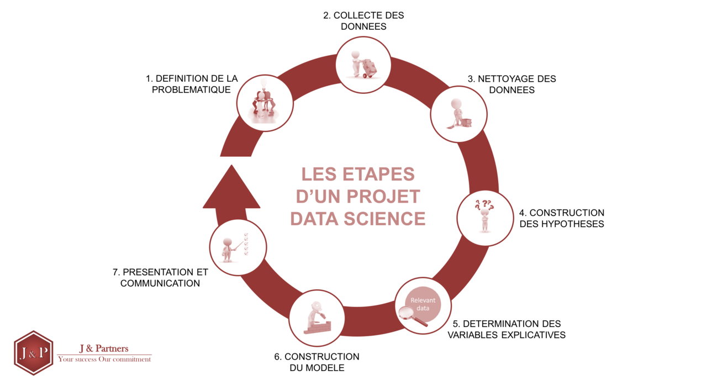

Découvrez comment les données sont collectées, préparées, nettoyées et analysées afin de produire des informations fiables pour la prise de décision.

Un dataset est une collection de données structurées, il prend le plus souvent la forme d'un tableau. Chaque ligne représente une observation et chaque colonne représente une information.
| ID | Nom | Âge | Ville |
|---|---|---|---|
| 1 | Mariam | 23 | Abidjan |
| 2 | Koffi | 21 | Bouaké |
| 3 | Awa | 24 | Yamoussoukro |
Organisées sous forme de tableaux comme Excel, CSV ou les bases SQL.
Données JSON ou XML.
Images, vidéos, PDF, audio...
La collecte des données est la première étape de tout projet de Data Science. Elle consiste à récupérer des informations provenant de différentes sources afin de constituer un dataset exploitable.
La collecte de données suit généralement un processus en 7 étapes. C'est ce processus qu'utilisent les entreprises, les chercheurs et les Data Analysts.
1. Définir l'objectif : Avant de collecter des données, il faut répondre à une question : Quel problème veut-on résoudre ? Quelles informations sont nécessaires ? Exemple : Une entreprise veut savoir pourquoi ses ventes diminuent.
2. Identifier les sources de données : On détermine d'où viendront les données. Les sources peuvent être : Sites web Applications mobiles Bases de données Réseaux sociaux Capteurs (IoT) Questionnaires Fichiers Excel ou CSV API Données publiques
3. Collecter les données : Les données sont enregistrées dans un espace sécurisé. Par exemple :
4. Stocker les données : Les données sont enregistrées dans un espace sécurisé. Par exemple : Base de données ( MySQL, PostgreSQL, SQL Server ), Data Warehouse, Data Lake, Cloud ( AWS, Azure, Google Cloud ).
4. Stocker les données : Enregistrer les données dans une base de données, un Data Warehouse ou un espace de stockage cloud.
5. Nettoyer les données : Les données brutes contiennent souvent des erreurs. On supprime : les doublons les valeurs manquantes les erreurs de saisie les données incohérentes Cette étape est essentielle avant toute analyse
6. Analyser les données : Les données sont ensuite étudiées avec des outils comme : SQL Python Excel Power BI Tableau L'objectif est de découvrir : des tendances des comportements des prévisions des indicateurs de performance
7. Prendre des décisions : Les résultats de l'analyse permettent à l'entreprise de prendre des décisions. Par exemple : lancer un nouveau produit améliorer un service réduire les coûts personnaliser les offres prévoir les ventes
Les entreprises utilisent souvent des fichiers Excel ou CSV pour stocker leurs données.
Les données sont récupérées depuis MySQL, PostgreSQL, SQL Server ou Oracle.
Les API permettent d'obtenir automatiquement des données depuis des applications ou des sites web.
Les grandes entreprises collectent leurs données grâce aux sites web, aux applications mobiles, aux API, aux bases de données, aux réseaux sociaux et aux interactions des utilisateurs.
Les données brutes contiennent souvent des erreurs. Avant toute analyse, il est indispensable de les nettoyer afin d'obtenir des résultats fiables.
| Problème | Solution |
|---|---|
| Valeurs manquantes | Supprimer ou remplacer les valeurs |
| Doublons | Supprimer les lignes répétées |
| Valeurs incohérentes | Corriger ou supprimer |
| Formats différents | Uniformiser les données |
Une fois les données nettoyées, elles peuvent être analysées afin d'obtenir des informations utiles pour la prise de décision.
Moyenne, médiane, maximum, minimum, fréquence...
Création de graphiques et tableaux de bord.
Les résultats permettent d'aider les entreprises à prendre de meilleures décisions.
| Outil | Utilisation |
|---|---|
| Excel | Saisie et manipulation des données |
| Python | Analyse et automatisation |
| Pandas | Nettoyage des datasets |
| NumPy | Calcul scientifique |
| Jupyter Notebook | Développement interactif |
| Power BI | Visualisation des données |
| SQL | Gestion des bases de données |
Voici un exemple d'un dataset contenant plusieurs erreurs.
| Nom | Âge | Ville |
|---|---|---|
| Mariam | 23 | Abidjan |
| Mariam | 23 | Abidjan |
| Awa | Bouaké | |
| Jean | 150 | Daloa |
| Nom | Âge | Ville |
|---|---|---|
| Mariam | 23 | Abidjan |